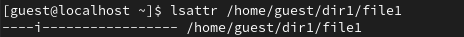
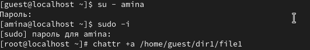
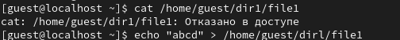
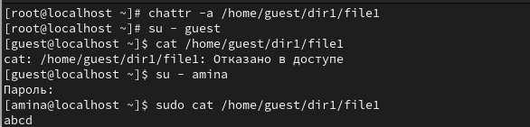

Получение практических навыков работы в консоли с расширенными
атрибутами файлов
1.
От имени пользователя guest определите расширенные атрибуты файла
/home/guest/dir1/file1 командой
([рис.
@fig-001]).

рис.1.1
2.
Установлю командой chmod 600 file1 на файл file1 права, разрешающие
чтение и запись для владельца файла
([рис.
@fig-002]).
рис.2.1
3.
Попробую установить на файл /home/guest/dir1/file1 расширенный атрибут a
от имени пользователя guest: chattr +a /home/guest/dir1/file1. В ответ
вы должны получить отказ от выполнения операции
([рис.
@fig-003]).

рис.3.1
4.
Зайдите на третью консоль с правами администратора либо повышу свои
права с помощью команды su. Попробуйте установить расширенный атрибут a
на файл /home/guest/dir1/file1 от имени суперпользователя: chattr +a
/home/guest/dir1/file1
([рис.
@fig-004]).

рис.4.1
5.
Попытаюсь создать в директории dir1 файл file1 командой echo “test” >
/home/guest/dir1/file1. Проверю командой ls -l /home/guest/dir1
([рис.
@fig-005]).

рис.5.1
6.
От пользователя guest проверьте правильность установления атрибута:
lsattr /home/guest/dir1/file1. Выполните дозапись в файл file1 слова
«test» командой echo “test” /home/guest/dir1/file1. После этого
выполните чтение файла file1 командой. cat /home/guest/dir1/file1.
Убедитесь, что слово test было успешно записано в file1. Попробуйте
удалить файл file1 либо стереть имеющуюся в нём информацию командой echo
“abcd” > /home/guest/dirl/file1. Попробуйте переименовать файл.
Попробуйте с помощью команды chmod 000 file1 установить на файл file1
права, например, запрещающие чтение и запись для владельца файла.
Удалось ли вам успешно выполнить указанные команды? Снимите расширенный
атрибут a с файла /home/guest/dirl/file1 от имени суперпользователя
командой chattr -a /home/guest/dir1/file1. Повторите операции, которые
вам ранее не удавалось выполнить.
([рис.
@fig-006]).
рис.6.1
Выводы
В ходе лабораторной работы были получены практические навыки работы с
расширенными атрибутами файлов в Linux. На примерах было изучено
действие двух ключевых атрибутов:
Атрибут a (append only): Разрешает только операцию дозаписи в конец
файла. Любые другие операции, изменяющие содержимое файла (перезапись)
или его метаданные (удаление, переименование), блокируются. Изменение
базовых прав доступа (chmod) остается возможным.
Атрибут i (immutable): Делает файл полностью неизменяемым.
Запрещаются все операции по изменению файла: запись (как дозапись, так и
перезапись), удаление, переименование и изменение прав доступа. Это
максимальный уровень защиты содержимого файла от изменений.
Было установлено, что для управления расширенными атрибутами
необходимы права суперпользователя. Расширенные атрибуты являются мощным
механизмом разграничения доступа, который действует на уровне файловой
системы и применяется поверх классической дискреционной модели прав
(права rwx). Это позволяет администратору установить более строгие
ограничения, которые не могут быть обойдены простым изменением базовых
прав доступа.